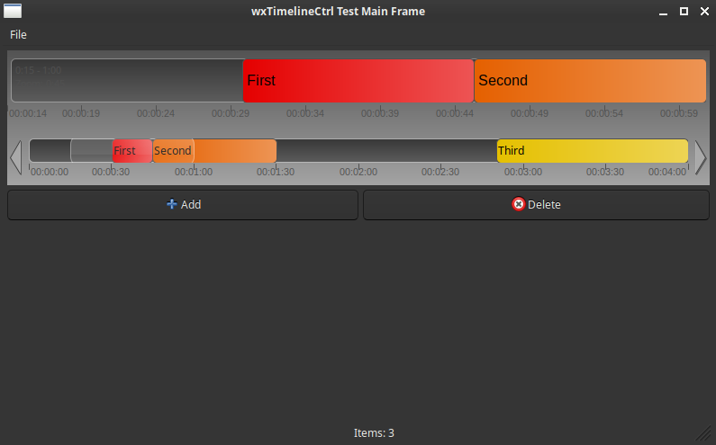

Welcome to the wxTimelineCtrl! This application showcases the features of an interactive timeline component built for the wxWidgets framework. This guide explains how to use this app

Interface Overview
The application window is composed of a few key areas:
- Main Timeline View (Top Area): This is the large, detailed view where you can see and interact with individual items.
- Scroller View (Bottom Area): This smaller timeline provides an overview of the entire time range. The bright, draggable rectangle on it represents the portion of the timeline currently visible in the main view above.
- Control Buttons ("Add" and "Delete"): These buttons allow you to create new items and remove existing ones.
How to Interact with the Timeline
This guide covers all the ways you can interact with the timeline using your mouse and keyboard.
1. Navigation (Panning and Zooming)
You can easily navigate through time and change the level of detail.
Panning (Moving Left and Right)
- Method 1 (Mouse Wheel): Hover your mouse over the main timeline view (the top area) and roll the mouse wheel up or down to pan.
- Method 2 (Arrow Keys): Use the Left and Right arrow keys to pan smoothly.
Zooming (Changing Detail Level)
- Use
Ctrl + + to zoom in and Ctrl + - to zoom out.
2. Item Manipulation
You can add, select, move, and delete items on the timeline.
Adding a New Item
- Click the **"Add"** button.
- In the dialog box, specify the item's properties:
- Name: The text that will appear on the item.
- Start Time & Duration: The item's position and length on the timeline.
- Color: The item's background color.
- Click "OK" to add the new item to the timeline.
Moving and Resizing Items
- Move Item: Left-click and drag an item horizontally to change its start time. The item will not overlap with others.
- **"Detached" Drag (Smart Insert):** Hold down the
Ctrl key in Scroller View, then start dragging an item. You will see it "lift off" the timeline and follow your cursor. When you drop it over other items, they will automatically shift to the right to make space, rather than being overwritten. This is useful for inserting an item into a packed schedule.
Deleting Items
- Click the **"Delete"** button.
- In the confirmation dialog, ensure the correct items are checked.
- Click "OK" to permanently remove them. You can also use the
Delete key on your keyboard.
3. Context Menu
- Right-click on a selected item in the main timeline to open a context menu, which includes a "Delete" option.
 1.9.8
1.9.8